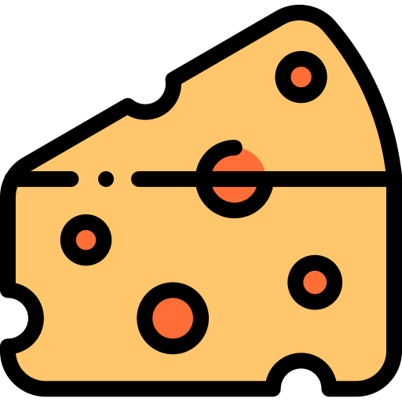
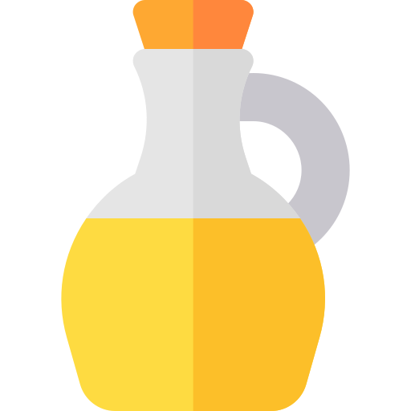

TDEE → Total Daily Energy Expenditure ⇝ which is the number of calories that your body burns in one day.
It is calculated by estimating how many claories you burn while resting (basal metabolic rate) and adding certain amount of calories on top Depending upon how often you exercise.
If you are consuming roughly the same amount
of calories as your TDEE you would be in neutral calorie balance.
→ More calorie then TDEE ⇝ positive calorie balance
→ Less calorie then TDEE ⇝ negative calorie balance
Research has shown that people who track there calories lose more weight.
you will need three things: food, a calorie tracker app and kitchen scale.
Here we will discuss how to utilize your scale to accomplish two things:
1: Ensuring that your calorie and macro counting is sufficiently accurate.
2: Making the overall process easier and less time consuming.
→ You don't always have to worry about the small things like 50 calorie less or more, extra salad, ketchup etc.
→ Sometimes you only have to weight it once, like one bowl of oat meal and from next time you will know that calorie consumption.
→ Raw or Cooked? - cooked rice absorbs alot of water and weighs more than raw.
A 180lb make would choose and average intake of between 145g and 180g of protein per day.
Two factor that determine where exactly you are on this range: body fat percentage and activity level.
→ the leaner you are meaning the more muscle instead of fat, you have to take more protein same goes with the people who are active.
Ideal carb intake
Light worhouts ⇝ 1-1.25 per lb.
Moderate workouts ⇝ 1.25-1.5 per lb.
Hard workouts ⇝ 1.5-1.75 per lb.
Your carb intake can be less on rest days because you don't need that much energy.
At least 15%-20% of your total calories which is good value to shoot for it, to ensure hormone production and general health.
For example diet (180lb male) between 390 calories - 520 calories → 45 grams - 60 grams
perday.
180lb male example diet (Intense workout)
TDEE 2600 calories
Protein: 180 * 0.8 = 145 grams of protein (=600 calorie)
Fat: 180 * 0.2 = 520 calories (=60 gram)
carbs: 180 * 1.5 = 270 grams (1000 calories)
2600 calories - { (600 calories protein) + (520 calories fat) + (1000 calories carbs) } = 500 calories remaining.
How you fill your remaining calories is up to you.
- eating more protein than recommended, you will not notice any extra muscle growth. Instead go for either additional carbs or fat.
If you are healthy adult that lives active lifestyle and your body has no problems in digesting carbs than there is no limit to your daily carbs as long as they come from quality sources such as brown rice, sweet potato.
The extra carbs will also give you additional energy which is great for your workouts.
If however, you're overweight and not very active or your body simply can't handle high amounts of carbs than fat will be a better option here because it is easily digested by our bodies.
It refers to how your diet is setuped taking into consideration the four following variables.
1- Number of meals
2- Protein intake around activity
3- Carb intake aroud activity
4- Fat intake around activity
Meal 1 ⇝ 25g P, 48g C, 12g F
Meal 2 ⇝ 25g p, 48g C , 12g F
Meal 3 (pre-workout)⇝ 35g p, 55g C , 12g F
Meal 4 (post-workout)⇝ 35g p, 70g C , 12g F
Meal 5 ⇝ 25g p, 48g C , 12g F
Fat time should be the least of your concerns since it really doesn't matter, the only time it can have negative impact is right before your workout as it slows down the digestion of good carbs and protein.
Now there are additional calories need to reach the TDEE of 2600 which should be either fat or carbs, feels free to add them to any meal you like.
Greek yogurt
Cottage cheese
Swiss cheese
Eggs

Milk
Whey protein
Lean cut steak

Ground beef
Pork chops
chicken breast
Turkey Breast
Tuna
Halibut
Salmon
Tilapia

Anchovies
Corned beef
Sardines

Beans
Jerky
Peanut butter
Nuts
Beans
Chickpeas
Nuts & nut butters
Tofu
Chia seeds
Leafy greens

The best sources are unprocessed whole foods like fresh fruit, legumes, whole grains and many vegetables.
These foods also contains fiber vitamins minerals and anti-oxidants.
Whole grain bread

Whole grain pasta

Whole grain cereal
Bananas
Mango
Apple

Orange
Pear
Beans
Peas
Lentils
(Sweet) Potatoes
(Brown) Rice
Quinoa
Oat meal
Tortillas
Avocados
Salmon
Olives & olive oils
Nuts and nut butters
Flax seed
Tuna
Dark chocolate
Sunflower seeds
Whole eggs

High quality meat
Full fat milk
Chicken breast
Pizza

Hot dogs
Hamburgers

Any type of fried or fast food